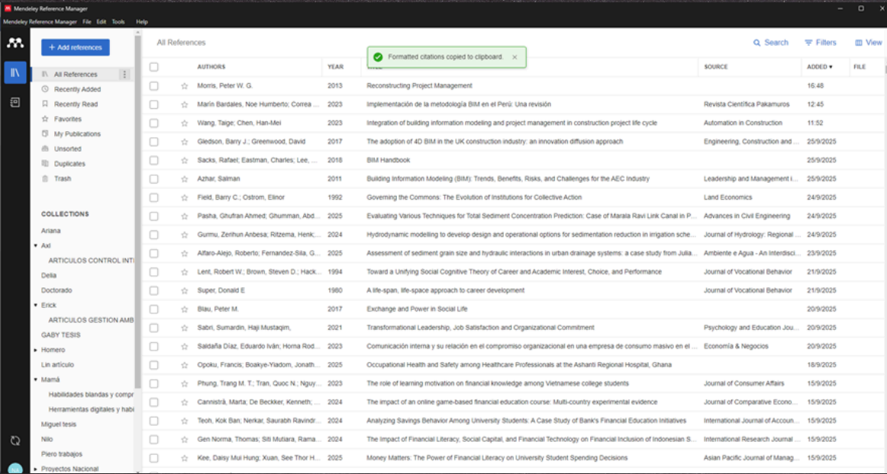

Presentado por Khunji Marilyn Alarcón Jiménez
Optimiza tu flujo de trabajo académico con Mendeley, la solución integral para organizar, compartir y citar tus investigaciones de manera profesional.
Dominar las funcionalidades clave de Mendeley para transformar la gestión bibliográfica en un proceso ágil, preciso y automatizado.
Más que un simple gestor, Mendeley es un ecosistema gratuito diseñado para investigadores. Permite centralizar tu biblioteca, generar citas en segundos y colaborar globalmente.
Ahorra horas de trabajo manual en el formateo de bibliografías.
Accede a tus documentos desde cualquier dispositivo y en cualquier lugar.
Explora un entorno intuitivo con secciones dedicadas a tus artículos y favoritos.
Utiliza el Web Importer para guardar referencias directamente.
Ver Web Importer ↗Crea colecciones personalizadas y utiliza etiquetas inteligentes para filtrar contenido crítico.
Inserta citas bibliográficas en tiempo real. Mendeley adapta el formato (APA, IEEE, Vancouver) al instante.
Únete a grupos de investigación y comparte documentos con colegas de todo el mundo.
Visualiza cómo la herramienta organiza automáticamente los metadatos de tus archivos PDF:

Navega usando los botones o las flechas del teclado